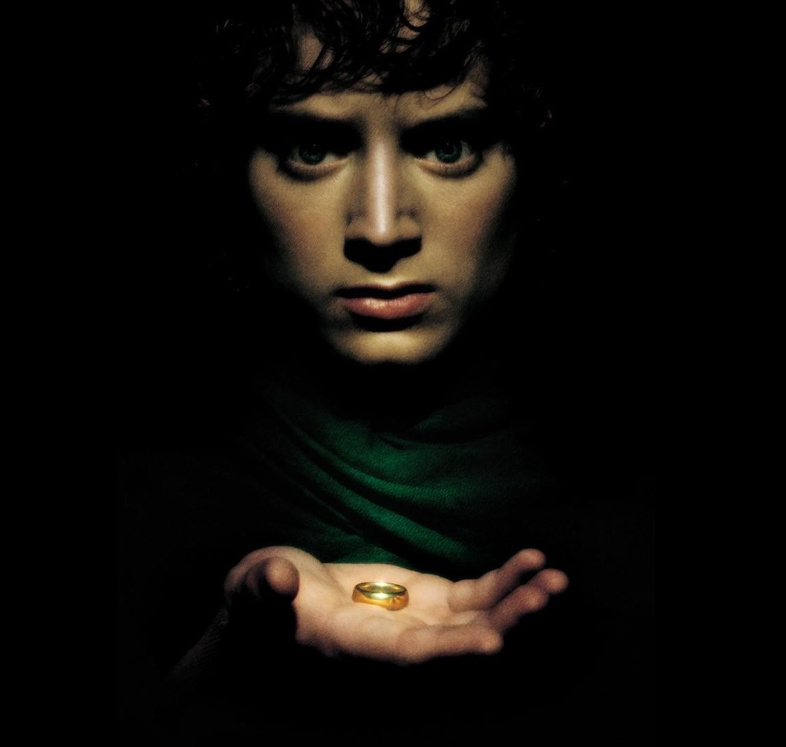
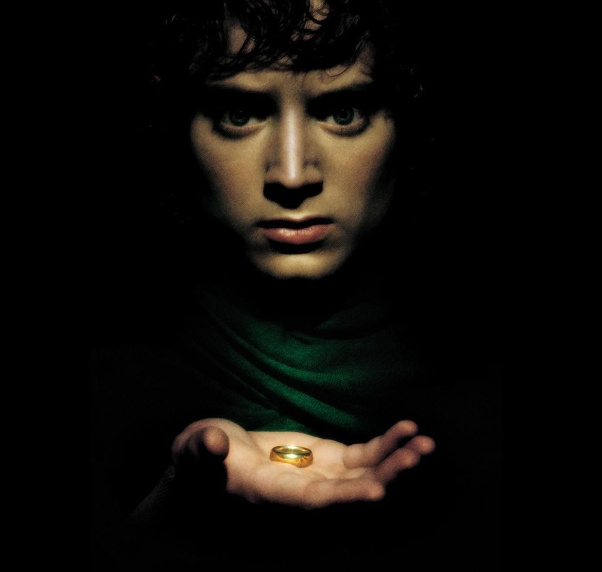

魔戒电影三部曲包括三部实景真人的奇幻史诗电影：《指环王：护戒使者》（2001年）、《指环王：双塔奇兵》（2002年）及《指环王：王者归来》（2003年）（三部曲常被缩写成LotR，FotR、TTT及RotK分别指三部电影）。
魔戒三部曲是以J·R·R·托尔金著作的小说《魔戒》的三册书改编而成，电影大抵依循小说的主线故事，但也加入了一些新元素及一些偏离原著的情节。 故事背景是虚构的中土大陆，电影三部曲的重点都集中在少年的霍比特人佛罗多·巴金斯及魔戒远征队执行毁掉至尊魔戒的任务，以及消灭至尊魔戒的制造者指环王索伦。随着情节的发展，魔戒远征队分崩析离，佛罗多、他的忠实伙伴山姆及奸诈的古鲁姆继续执行任务。同时，巫师甘道夫、流亡的刚铎王位继承者阿拉贡联合中土大陆的自由子民对抗索伦，最终在魔戒圣战取得胜利。
凯兰崔尔叙述的序言讲及索伦铸造至尊魔戒以图征服中土大陆，人类及精灵组成联盟发动最后同盟战役推翻了索伦。至尊魔戒落入埃西铎手中。埃西铎后来被半兽人所杀，至尊魔戒失落，在数千年后才被霍比特人斯米戈尔所获，因受魔戒的影响，斯米戈尔成为古鲁姆。至尊魔戒急欲返回它的主人索伦手里，于是离弃古鲁姆，被霍比特人比尔博·巴金斯所获。
在比尔博111岁生日当天，比尔博将至尊魔戒让给堂侄佛罗多·巴金斯。比尔博好友甘道夫经过探查后发现那就是失落的至尊魔戒，由于索伦急欲取得至尊魔戒，甘道夫嘱咐佛罗多要尽速带同魔戒离开夏尔。甘道夫赶往伊森加德与巫师的首领萨鲁曼商讨对策，萨鲁曼透露索伦已派出戒灵夺取魔戒，认为中土自由子民无从抵抗，并邀请甘道夫和他一起加入索伦阵营。甘道夫拒绝，萨鲁曼遂将甘道夫囚禁在欧散克塔。
佛罗多和伙伴山姆在赶往布理途中遇到皮平及梅里。他们在布理遇到神行客，神行客阿拉贡带领他们赶往瑞文戴尔。他们在风云顶被戒灵袭击，佛罗多被戒灵刺伤，生命危在旦夕。女精灵阿尔温带同佛罗多赶往瑞文戴尔，阿尔温的父亲埃尔隆德救治了佛罗多。
埃尔隆德召开会议商讨至尊魔戒的事情。唯一摧毁至尊魔戒的方法就是将它丢进末日火山的火焰里。佛罗多自愿执行这个任务，其霍比特人伙伴、甘道夫、阿拉贡、精灵莱戈拉斯、矮人吉姆利及刚铎大将博罗米尔都加入，组成魔戒远征队。他们原本计划攀越卡兰拉斯山，但受萨鲁曼阻挠。魔戒远征队遂穿越摩瑞亚矿坑，他们在矿坑内受到半兽人、食人妖及炎魔的袭击。甘道夫阻击炎魔，双双堕入深渊。
失去甘道夫的魔戒远征队赶往罗斯洛立安谒见女王凯兰崔尔。整顿以后，众人沿安都因河朝帕斯加兰进发。博罗米尔急切于利用魔戒拯救刚铎，于是尝试从佛罗多手中夺取魔戒。佛罗多有感于魔戒的诱惑力惊人，于是决定独自前往莫多。此时，魔戒远征队受到萨鲁曼的强兽人袭击，后悔行为鲁莽的博罗米尔为了保护梅里及皮平而受重伤，梅里及皮平被强兽人掳走。阿拉贡原谅了博罗米尔，博罗米尔在死前终承认了阿拉贡是他的国王。阿拉贡、莱戈拉斯及吉姆利为了营救梅里及皮平而追踪强兽人。另一方面，佛罗多向北而行，渡过安都因河，尾随而至的山姆誓死追随佛罗多。
电影开头呼应首部曲，甘道夫在摩瑞亚的桥上与炎魔对峙，甘道夫与炎魔坠落深渊。佛罗多从梦境中醒过来，与山姆继续行程，他们被希望夺回魔戒的古鲁姆袭击，佛罗多及山姆制伏了他，佛罗多正需要一名向导引领他们前往莫多，于是让他引路。
在罗翰，萨鲁曼那一支掳走梅里及皮平的强兽人部队横过草原向伊森加德进发，莱戈拉斯、吉姆利及阿拉贡尾随追踪。萨鲁曼亦在罗翰国王身边安插了葛力马巧言控制着塞奥顿。萨鲁曼聚集大军展开攻势，沿途烧杀破坏，塞奥顿的儿子塞奥德雷德战死。塞奥顿之甥伊欧墨责难葛力马，反被葛力马驱逐，伊欧墨聚集了一些忠实的部下离去。
佛罗多及山姆横过死亡沼泽，一路上躲避戒灵的空中游戈，终于抵达黑门。黑门被重兵驻守，佛罗多及山姆两人束手无策，古鲁姆建议他们透过另一条秘密的阶梯潜入莫多。同时，被驱逐的伊欧墨领导骑兵在法贡森林附近歼灭了梅里及皮平所在的那一支强兽人，梅里及皮平逃进法贡森林，并遇到树胡。
莱戈拉斯、吉姆利及阿拉贡遭遇伊欧墨，得知梅里及皮平生还机会渺茫，阿拉贡仔细查察之下发现梅里及皮平进入了法贡森林，亦尾随进入，他们在森林里遇到白袍巫师，发现竟是重生的甘道夫。他们联袂来到罗翰都城伊多拉斯，消除了萨鲁曼对塞奥顿的控制，驱逐葛力马。恢复自我的塞奥顿得知萨鲁曼的威胁后决定将罗翰人民撤至要塞圣盔谷。甘道夫深明以罗翰的现有兵力坚守圣盔谷也不能抵挡萨鲁曼的大军，于是出发前往寻找伊欧墨。
佛罗多、山姆及古鲁姆目击刚铎军队伏击一支南方人，佛罗多及山姆被刚铎军队擒获。罗翰人在撤往圣盔谷途中遭遇萨鲁曼的狼骑士袭击，阿拉贡坠落峭壁失踪。在瑞文戴尔，阿拉贡的恋人阿尔温在父亲的劝说下出发，准备离开中土大陆。
佛罗多及山姆被带到汉那斯安南，刚铎大将法拉米尔得悉佛罗多持有魔戒，为了向父亲证明他的价值，他决定将佛罗多及至尊魔戒带到刚铎。阿拉贡抵达圣盔谷，准备迎战萨鲁曼，一支受埃尔隆德所命的精灵部队亦赴援。法贡森林的树胡召开树人会议，商讨是否应介入战争。
圣盔谷之战在大雨下展开，罗翰战士奋力抵挡。树人会议最终决定不介入战争，皮平诱导树胡将他们带到南面，树胡发现法贡森林南部的林木被萨鲁曼砍伐用作燃料，树胡震怒，遂带领树人报复。 罗翰一方的形势急转直下，阿拉贡等人带领守军进行最后的冲锋，清晨时分，甘道夫引领援军抵达战场，击败了强兽人大军。树人亦控制了伊森加德。法拉米尔等人到达奥斯吉力亚斯，该处正在进行战斗，法拉米尔得悉佛罗多等人的任务，决定释放他们。古鲁姆感到被佛罗多背叛，于是引导两名霍比特人前往“她”那里。

电影开始时讲述霍比特人德戈及斯米戈尔发现魔戒的过程，斯米戈尔杀死德戈并夺取魔戒，从此隐匿深山里。返回现在，阿拉贡等人来到伊森加德，会合梅里及皮平，萨鲁曼想告知甘道夫莫多的事情时，被葛力马巧言从后偷袭，跌下塔底死亡，真知晶球从袍内流出，皮平拾起了萨鲁曼的真知晶球，但被甘道夫取去。塞奥顿在返回伊多拉斯后举行庆典。佛罗多等人逐渐靠近莫多，古鲁姆的阴谋面也逐渐呈现，他计划引导霍比特人到西力斯昂哥，让尸罗杀死他们，他便可获得魔戒，又开始离间佛罗多与山姆。
出于好奇的皮平偷看真知晶球，他看到燃烧中的圣白树，索伦透过心灵接触拷问皮平。甘道夫以此推断索伦准备进攻米那斯提力斯，于是携同皮平赶往警示刚铎摄政王迪耐瑟二世。前往灰港岸路上的阿尔温预见了她和阿拉贡的儿子，她返回瑞文戴尔说服父亲，又让父亲重铸纳希尔圣剑。
甘道夫及皮平到达米那斯提力斯，谒见因博罗米尔之死而悲伤的迪耐瑟二世。皮平向迪耐瑟效忠以回报博罗米尔的犠牲，悲伤的迪耐瑟无意采取任何措施回应索伦的行动。佛罗多等人路经米那斯魔窟附近，目睹安格马巫王派遣军队出击的情况。甘道夫指示皮平燃点烽火台向罗翰求援。
莫多大军渡过安都因河向刚铎控制的奥斯吉力亚斯进攻，以法拉米尔为首的刚铎守军大败，撤返米那斯提力斯。败军被戒灵追击，甘道夫营救他们，法拉米尔向甘道夫透露了佛罗多等人的情况。 攻克奥斯吉力亚斯后，安格马巫王下令要杀绝米那斯提力斯的人类。迪耐瑟不满法拉米尔弃守奥斯吉力亚斯，要他不惜一切代价夺回奥斯吉力亚斯。古鲁姆继续离间佛罗多及山姆，终使佛罗多赶走山姆。
法拉米尔的自杀式攻势全军覆没，他本人亦重创而回。同时，埃尔隆德赶来会面阿拉贡，奉上纳希尔圣剑，并促请阿拉贡以此剑召唤登哈洛的亡者参战，阿拉贡遂联同吉姆利、莱戈拉斯连夜出发。一直倾慕阿拉贡的罗翰王女伊欧温恳求阿拉贡留下来，阿拉贡从埃尔隆德口中得知阿尔温为了他放弃了精灵的永生，拒绝了伊欧温。翌晨，塞奥顿领导六千骑兵赴援，伊欧温及梅里亦暗中混入军队。
莫多大军开始围攻米那斯提力斯，迪耐瑟误以为重伤的法拉米尔已离世，绝望及失去子嗣打垮了迪耐瑟，他下令刚铎守军放弃抵抗，甘道夫制伏了他，并指挥作战。古鲁姆引领佛罗多来到尸罗巢穴，佛罗多被尸罗的毒针所伤，山姆赶到，并击退尸罗。山姆误以为佛罗多已死，昏迷的佛罗多被半兽人带走。
莫多大军击破了城门，守军不支退守内城。此时，罗翰援军抵达一度击溃了莫多大军，但随着南方人的增援，莫多大军在猛玛的掩护下再次集结兵力。安格马巫王重创塞奥顿，伊欧温为了保护国王挺身与安格马巫王对峙，亦被重创，梅里在危急关头介入，与伊欧温联手杀死安格马巫王。阿拉贡透过海盗船带领着亡者军队抵达，击败莫多军队。塞奥顿伤重逝世。亡者军队在履行了诺言后，阿拉贡将他们释放，亡灵随风而去。西力斯昂哥的守军因佛罗多的一件秘银甲衣而爆发内哄，大部分半兽人守军都死于这次冲突，山姆得以营救佛罗多，两人向末日火山进发。
甘道夫得知一万莫多士兵集结在西力斯昂哥与末日火山之间，堵住了佛罗多的去路。阿拉贡提议率领部队开赴黑门以吸引索伦的注意力。 山姆及佛罗多即将抵达目的地，古鲁姆在此时现身并袭击两人。佛罗多最终在末日火山被至尊魔戒控制，他戴上了魔戒将之据为己有，古鲁姆上前抢夺魔戒，咬断了佛罗多的手指，古鲁姆得到魔戒后非常兴奋，佛罗多上前纠缠，两人在悬崖失足。佛罗多幸得山姆解救，古鲁姆与至尊魔戒都被炽热的熔岩摧毁。力量与至尊魔戒相连的索伦终告失败，永远失去了力量。正在黑门前作战的半兽人及戒灵亦受到牵连。
末日火山爆发，正当佛罗多及山姆都以为他们没法再看见夏尔时，甘道夫与巨鹰拯救了他们。除了博罗米尔外，魔戒远征队在米那斯提力斯团圆。阿拉贡被加冕为刚铎国王，并再会阿尔温。霍比特人返回家乡，山姆迎娶小玫·卡顿，佛罗多续作了西境红皮书，他仍受到魔戒影响，他知道他无法在中土大陆平稳地生活，于是决定与甘道夫、比尔博、埃尔隆德、凯兰崔尔前往灰港岸，乘上离开中土大陆的船只。山姆、皮平及梅里各自回家，山姆最终以一句“我回来了”作终。 

魔戒三部曲是史上录得最高利润的电影三部曲，击败其他的电影大作如《星球大战》三部曲及《教父》。魔戒三部曲合共带来了29.1亿美元的收益。
魔戒三部曲亦是奥斯卡金像奖获奖数量最多的纪录保持者。大多数的评论者都对魔戒三部曲称赞有加。《洛杉矶时报》的影评家肯尼斯·杜兰写道：“在短期内也不会有任何电影可与魔戒三部曲相提并论”。演员伊恩·麦凯伦、肖恩·阿斯廷、肖恩·宾、安迪·塞基斯及柏纳德·希尔在魔戒三部曲里的表现在观众民意调查里引人注目，电影的特效及古鲁姆都备受赏识。少数影评家如《芝加哥太阳报》的罗杰·艾伯特对魔戒三部曲并没有如此高的评价，他同样赞扬电影的特效，但对故事本身持批评的态度，魔戒三部曲里没有一部名列他心目中的前十电影。总括而言，魔戒三部曲在烂番茄网站上得到94%的正面评价（《护戒使者》得到92%的正面评价、《双塔奇兵》得到96%的正面评价、《王者归来》得到94%的正面评价）。
在著名IMDB网络电影数据库方面 ，魔戒电影三部曲都取得了非常高的评价（首部曲为8.8/10分 、二部曲为8.7/10分、 三部曲为8.9/10分)。更令人敬佩的是 ，自从2013年起 ，每部魔戒系列作品都在IMDB的250部最佳影片中维持前20名的位子 , 这个纪录可说是无人能及。 魔戒三部曲名列许多的“十大”电影名单，如达拉斯-沃斯堡影评人协会十大电影、时代杂志影史百大电影、詹姆斯·伯洛戴利的百大电影及银幕目录的“影史十大电影”（魔戒三部曲被视为一部分作三部分的电影）。2007年，《今日美国》认为魔戒三部曲是二十五年来最重要的电影。 魔戒三部曲在销量上超越同时代的其他三部曲电影如《加勒比海盗》、《蜘蛛侠》、《星球大战前传》。
魔戒三部曲一共取得30项奥斯卡金像奖提名，获得17个奖项，是电影三部曲的一个纪录。《王者归来》的所有提名都获得奖项，这是极为罕见的，当中《王者归来》获得的最佳影片奖被视为是代表魔戒三部曲获得的。《王者归来》与《宾汉》及《泰坦尼克号》同是奥斯卡金像奖获奖数量最多的纪录保持者，获得11个奖项。《护戒使者》的演员伊恩·麦凯伦虽然获得提名，但魔戒三部曲里的演员并没有获得任何奖项。
魔戒三部曲的每一部电影都获得MTV电影大奖的最佳电影奖及雨果奖最佳剧本的奖项。《护戒使者》及《王者归来》都获得英国电影和电视艺术学院的最佳电影奖项。《双塔奇兵》的声带不能获得奥斯卡金像奖的提名，因条例禁止前作含音乐的声带被提名，而这条例在《王者归来》被提名时已被废除，故《王者归来》可获得奖项。

我说《指环王》系列，是属于凡人的神话，不只是因为其原著作者托尔金以凡人之身创造了一个世界，更是因为故事的主角选择。
中土世界时逢乱世，英雄豪杰并起。
精灵王子，矮人英雄，人类国王，半兽人酋长，白衣巫师……
英雄豪杰之多，宛如天上繁星。 可故事的主角却不是以上的任何一个人。
而是平凡的霍比特人佛罗多和他的朋友哈比人厨师山姆。
当时代末日将至时，拯救了世界的却是两个在群星璀璨的时代里最为平凡普通的人。
就是这么两个平凡普通的人，却说出了三部《指环王》里我最热爱的一句台词： “这个世界上一定存在着善良，值得我们奋战到底。” 甚至于让刚铎的摄政王子法拉墨感慨： “夏尔（哈比人的故乡）真是个好地方，就连厨师都那么伟大。”
明明就在故事开始的时候，山姆还在自己家乡的边境说过： 这是我离开家最远的一次了。 至于佛罗多，他比山姆还要更少出门。
可就是这么两个平凡的霍比特人，却独自勇敢的面对着魔戒的致命诱惑和戒灵的追击，面对着半兽人与强兽人大军的不断追击，离家跋山涉水千万里，最终毁灭了黑暗势力的最后希望。
千万里之外，两个小霍比特人最终克服千难万险，终于站在了末日火山前，销毁了魔戒。 此时，回头想想，佛罗多离家千万里，从家乡带走的东西很多，可到了最终，却只有山姆。 而山姆带走的，只有一撮家乡最好的盐。 就是这么两个普普通通哈比人，却成为了那个豪杰并起的时代里最为伟大的英雄。这，怎么能不说是属于凡人的神话呢。